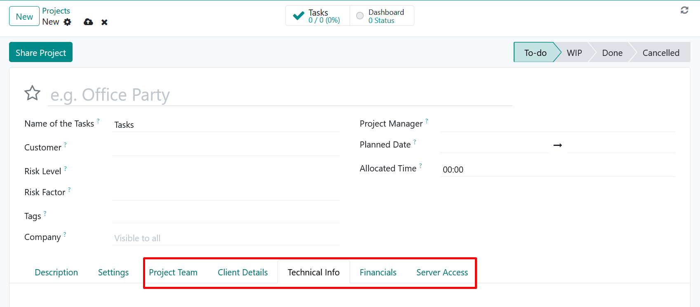
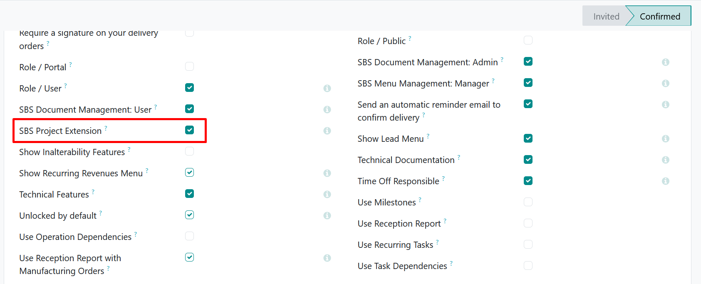
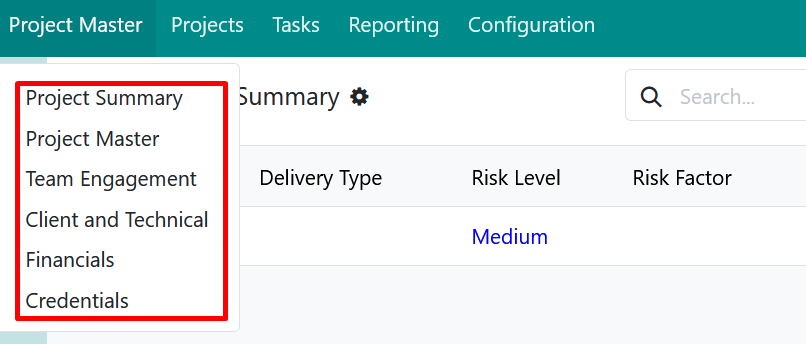

Keep extended project, team, client, technical, review, AMC, and financial information organized in one place.
Keep project summaries and operational details directly on the project record.
Record project managers, functional analysts, developers, and their engagement details.
Organize client contacts, technical information, environments, and AMC details.
Track internal project reviews and customer review sessions with completion status.
Maintain collection plans, collection history, project values, and received amounts.
Give selected users access to the extension pages, menus, and supporting records.
Count time on a task and log it to the task timesheet. The counted time can be reduced before logging, never increased.


